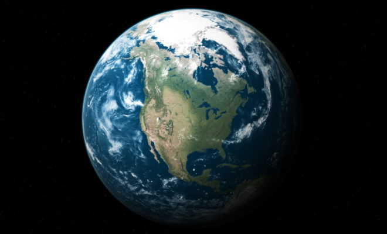
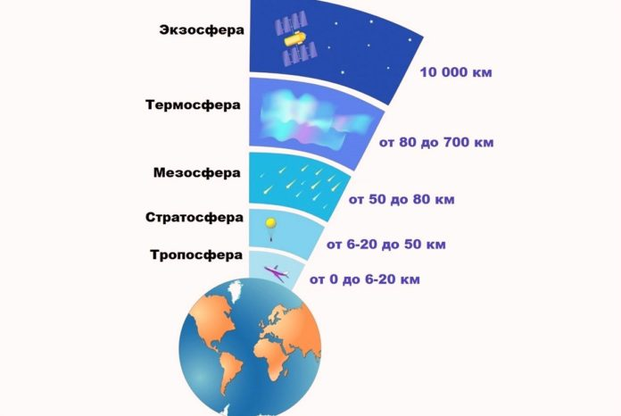
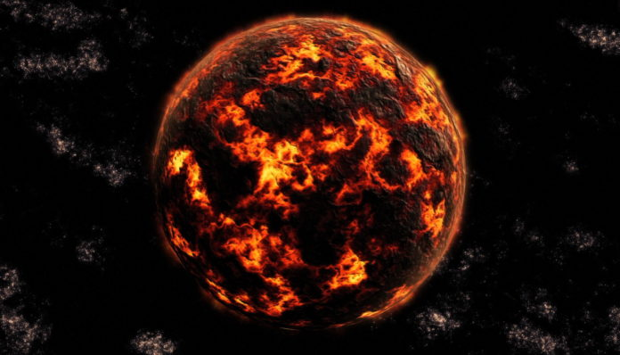
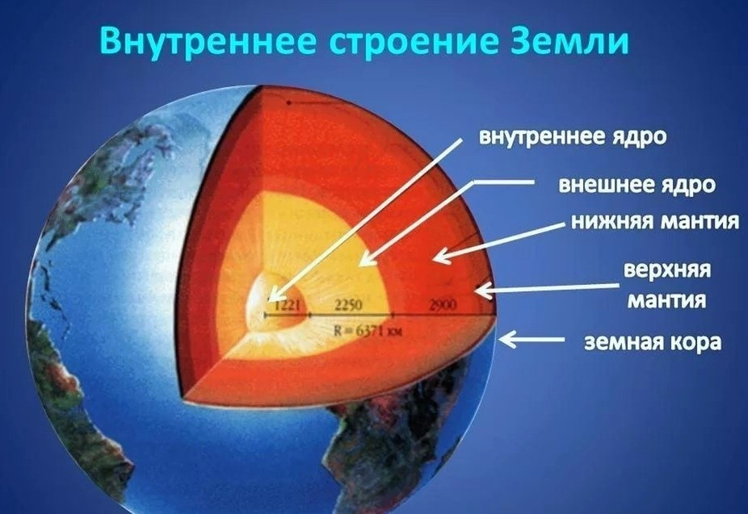
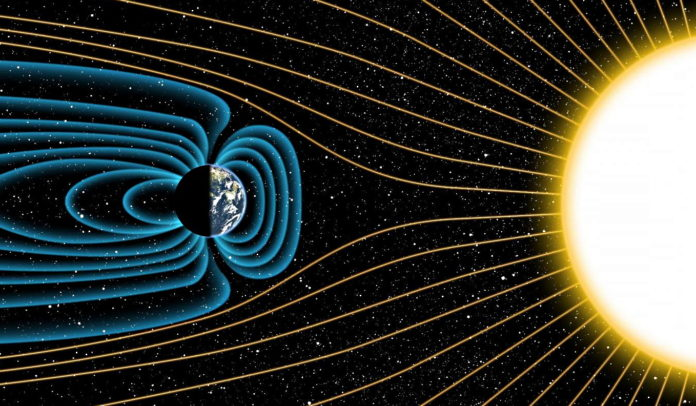
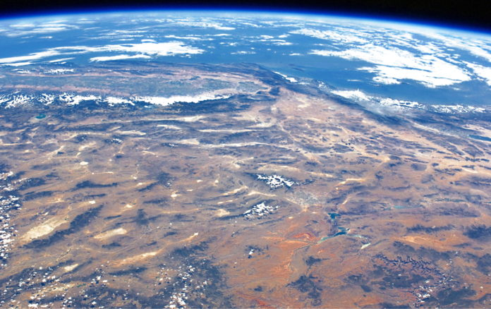
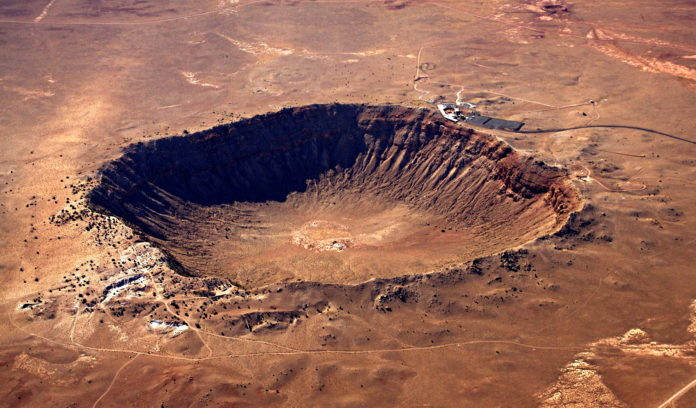
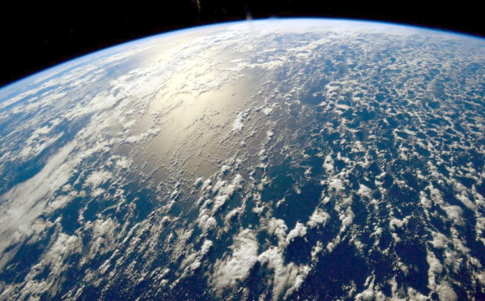

Земля Строение планеты, описание, атмосфера, орбита, поверхность, фото и видео
Земля является третьей планетой от Солнца и единственной в системе, где имеется жизнь. Небесное тело обладает большим количеством особенностей, и люди уже успели хорошо его изучить. Оно относится к планетам земной группы, наряду с Марсом, Венерой и Меркурием. Объект движется вокруг Солнца по определенной орбите и обладает уникальным климатом, благодаря которому существование жизни стало возможным.
Атмосфера
Атмосфера планеты имеет пять слоев:
- Тропосфера. Нижний слой, высота которого составляет 12 км, является самым плотным, поскольку в нем находится наибольшее количество кислорода и других веществ. Температура в тропосфере с каждым километром падает на 6 градусов Цельсия по мере подъема. Источник
- Стратосфера. Второй слой атмосферы, находящийся над Землей на расстоянии от 12 до 50 км. В нем присутствует большое количество озона, который не пропускает ультрафиолет, исходящий от Солнца. Таким образом, стратосфера защищает поверхность планеты от радиации. yandex
- Мезосфера. Слой находится на расстоянии от 50 до 85 км над поверхностью Земли. Его средняя температура равна -90 градусов Цельсия. Google
- Термосфера. Четвертый слой атмосферы, который находится на высоте от 85 до 800 км. Он характеризуется высокими температурами: в некоторых местах этот параметр доходит до +1500 градусов Цельсия. Источник
- Экзосфера. Верхний слой атмосферы планеты, который начинается на высоте в 800 км над поверхностью. Он содержит наименьшее количество кислорода, и примерно на высоте в 10 тысяч км постепенно переходит в космическое пространство, где не действует сила притяжения Земли. Источник: https://kipmu.ru/zemlya/
История образования Земли
Земля образовалась примерно 4,54 млрд лет назад вместе с другими планетами Солнечной системы. Ранее на этом месте располагалось большое протопланетное облако, которое постепенно пришло во вращение. Находящиеся внутри него вещества начали сталкиваться друг с другом и собираться в планеты.
Интересный факт:
формирование Земли продолжалось на протяжении 10-20 млн лет, после чего она превратилась в планету, но ее внешний вид и структура были далеки от современных.
Изначально Земля представляла собой раскаленное тело, но постепенно оно начало остывать. По мере снижения температуры поверхность покрывалась твердой оболочкой. А примерно через 10 млн лет в планету врезалось небесное тело, названное учеными Теей. В результате столкновения на определенное расстояние от нее отлетели осколки, которые впоследствии превратились в Луну.
Благодаря вулканической деятельности и реакции, происходящей внутри горных пород, вокруг планеты сформировалась атмосфера. В ней начала конденсироваться вода, которая в совокупности составила Мировой Океан. Через миллиард лет после формирования планеты вокруг нее образовалось магнитное поле, которое начало защищать ее от солнечных ветров. Примерно 3,3 млрд лет назад на Земле появились условия, подходящие для создания жизни
Почему Земля так называется
Люди называют третью планету от Солнца “Землей” уже долгое время. На каждом языке обозначение небесного тела звучит по-разному, тем не менее, оно остается неизменным на протяжении тысяч лет. Но откуда появилось это название?Большинство планет Солнечной системы получили имена, имеющие отношение к божествам определенных культур. И Земля не является исключением. В мифологии многих народов прошлого существовало божество, характеризующее собой плодородие почвы. Скандинавские народы поклонялись богине Ёрд, римляне почитали Теллус (Терру).
Именно от них появились различные варианты названия планеты, которые используются разными народами до сих пор. Например, имя богини Ёрд послужило основой для появления английского “Earth” – именно так называют третью планету от Солнца народы, говорящие на этом языке. В астрологии небесное тело именуют Terra. Причиной для появления имени послужила римская богиня Теллус.
На русском языке планета называется “Земля”. Основой для такого имени послужило слово “Зем”, которое обозначает почву. На большинстве языков название небесного тела имеет такое же значение, но произносится по-разному.
Строение Земли
Сердцевина Земли состоит из двух компонентов: внутреннего и внешнего ядер. Их радиус составляет 1300 км и 2200 км соответственно. В центре планеты температура способна достигать +5000 градусов Цельсия. Вокруг ядра находится слой мантии, который составляет примерно 84% от всего состава Земли. Он, в свою очередь, делится на верхнюю и нижнюю. Наружный слой мантии, называемый литосферой, начинается на глубине 2900 км от поверхности.
Интересный факт: масса слоя мантии составляет 67% от общего веса третьей планеты от Солнца.
Характеристики планеты
Земля обладает следующими характеристиками:
- масса планеты равна 5972*10^21 кг.
- единственным спутником Земли является Луна.
- радиус в экваторе – 6371 км.
Магнитное поле
Земля непрерывно вращается вокруг своей оси. Ядро, находящееся внутри планеты, реагирует на это, из-за чего вокруг нее возникает магнитное поле, называемое “магнитосферой”. Также оно привязано к полюсам – Северному и Южному. Когда на Солнце происходят вспышки, множество частиц ионизированного газа попадают на Землю и вступают во взаимодействие с ним. Из-за этого в магнитном поле происходят сильные изменения, называемые бурями. Некоторые люди чувствуют эти колебания, из-за чего у них появляется мигрень и головные боли.
Полярные сияния являются наглядным примером магнитных бурь. Солнечный ветер сталкивается с атомами, находящимися в атмосфере Земли, после чего в пространстве появляется характерное свечение.
Интересный факт: полярное сияние наиболее заметно у Южного и Северного полюсов планеты, но на последнем оно видно гораздо отчетливее.
Суша
Поверхность планеты состоит из суши и Мирового океана. И хоть земляная область по площади меньше, чем водная, она имеет неоднородную структуру и массу особенностей. Суша состоит из гор, равнин, лесов, пустынь и других территорий, имеющих уникальный ландшафт.
Интересный факт: площадь суши Земли составляет примерно 134,7 млн кв. км. Это 29,1 % от общей поверхности планеты.
Главная отличительная особенность поверхности Земли от других планет заключается в том, что на ней практически полностью отсутствуют кратеры. Но это не означает, что их никогда не было в большом количестве. Известно, что до образования атмосферы на ней присутствовали многочисленные кратеры, поскольку небесные тела не сгорали в момент сближения. Но постепенно эти неровности на поверхности исчезли.
Ученые установили две основные причины, почему кратеры постепенно “стерлись” с Земли: эрозия и выветривание. Оба явления протекают очень медленно, и их влияние может быть заметно лишь через долгое время.
Под эрозией подразумевается процесс, в ходе которого частицы воды, почвы и ветер воздействуют на поверхность. Они медленно убирают неровности, делая участок суши ровным. Выветривание – процесс разрушения поверхности на мелкие куски, например, когда русло реки постепенно стирается из-за содержащихся в воде твердых веществ. Два этих процесса являются основными факторами, почему со временем кратеры на Земле полностью исчезли. А образование новых стало невозможным, поскольку с появлением атмосферы метеориты начали сгорать при сближении с поверхностью.
Океаны Земли
Мировой океан составляет примерно 70 % от всей поверхности Земли. Даже при наблюдении из космоса за планетой невооруженным взглядом видно, что большая площадь небесного тела – синего цвета. Наличие воды в жидком виде является уникальной отличительной особенностью Земли от остальных объектов Солнечной системы.
Мировой океан на планете образовался примерно 3,8 млрд лет назад, благодаря чему стало возможно появление жизни. Ведь первые существа появились именно в воде, после чего в процессе эволюции перебрались на сушу.
Существует две версии, как образовался Мировой океан. Когда Земля формировалась, она поглотила большое количество водяного пара, имеющегося в космосе. Долгое время он находился под поверхностью, но когда началась геологическая активность, вырвался наружу. Попав в атмосферу, пар сконденсировался и осел на Земле в виде воды. Вторая версия заключается в том, что в прошлом на планету падали метеориты, практически полностью состоящие из льда. Последний постепенно растаял и образовал водоемы.